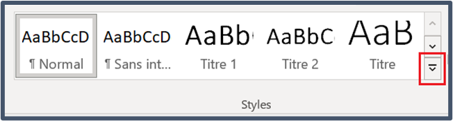

Making Accessible Emails
Accessible email is important for people with disabilities but also for everyone. Find out how to create an accessible email in outlook.
Format
Outlook offers three format options: HTML, Plain Text and Rich Text. Of these three options, HTML format provides the most accessible experience.
Using HTML format has several benefits that make your email messages more inclusive:
- Structured content: Allows for organized and hierarchical content using headings, paragraphs, lists, and tables. This structure helps people using adaptive technologies navigate the content easily.
- Text formatting: Supports formatting the style of your text. Use the built-in text styles like heading levels, Strong (bold text) or Emphasis (italicized text) to help convey meaning to the text, benefiting individuals with visual impairments.
- Hyperlinks: Allows for the inclusion of hyperlinks, which aids in providing additional context or references. Adaptive technology can detect and announce links, making it convenient for users to access relevant information.
- Alternative text for images: Enables the use of alternative text (Alt text) for images, helping some users to understand the content more easily. Adaptive technology can read out the alt text, providing context for images.
Using HTML format allows you to follow accessibility guidelines like WCAG and EN 301 549.
To send your emails using HTML format:
- choose File (Alt + F)
- select Options (T)
- select Mail (M)
- go to Compose messages drop-down list (Alt + C) and choose HTML
- select OK.
Bilingual message (if applicable)
Whenever possible, avoid creating bilingual emails. Bilingual emails can introduce a lot of accessibility and usability challenges for a wide range of users.
If you must use bilingual emails, be sure to make them as accessible as possible.
- Add a bookmark to let users skip to the section containing their language of choice.
- Include location of language information.
- in emails where English is the first language used, include “Le français suit l’anglais” above the English content
- in emails where French is the first language used, include “English follows” above the French content
Setting a language
If you set an entire document to English but there are some sections that have text written in French, English screen readers will try to pronounce the French information, resulting in gibberish sounds.
- Perform language markup to help screen readers read French text properly. Use this for changing the proofing language of sections of a document 1. Set Proofing Language (Alt, V, U, L). 2. Highlight the text that you want set to a different language. 3. Select the Review tab; then select Language > Set Proofing Language.
Plain language
Avoid overly complex writing styles.
- Put the most important information first.
- Understand your audience to determine tone and level of detail. Aim for an everyday level of language (up to Grade 8) instead of scientific level of language (up to PhD) whenever possible.
- Arrange the topics in a logical order so it is easy to follow and understand
- Choose simple vocabulary and avoid complex words and/or policy language
- Use short sentences (20 words or fewer).
- Use an active voice (for example, “they decided,” not, “a decision was made”).
- Define abbreviations the first time you use them (for example, “Shared Services Canada (SSC)”).
Resources:
- Canada.ca Content Style Guide—Plain Language
- Write for your Reader—A plain language handbook
- Putting plain language into practice
- Plain Language Audit Tool—A checklist to review documents
Styles
A Style is a set of built-in formatting characteristics that you can apply to content in your document including headings. A Style contains formatting information such as font colour and size, whether the text is bold or italic, and paragraph and line spacing. When you apply a Style to text, you are applying all the formatting information contained in that Style to your text in one easy step, and you maintain consistent formatting throughout your document.
- Do not use direct formatting (changing the appearance using the font attributes in the Font group on the Home tab) to change the appearance of your headings or normal text. Instead, modify a style
- Avoid extra spaces or returns for formatting. Instead, modify paragraph style to add space.
- Do not use the Bold or Italics buttons in the Font group on the Home tab. Adaptive technology will not identify these styles to the user. Instead use Strong style for text you want bolded and Emphasis style for text you want italicized so that all users will receive the same information.
Using a style
The Styles pane is on the Format Text tab. Highlight the text that you want to change, for example, a heading in your message.
To access the Styles pane, select the expansion arrow (Alt, H, F, Y) and the Styles pane will open. Select Title. The text will be formatted to the Title style and highlighted in the Styles pane.

Modify a style
- Place your cursor in the text with the style you want to modify.
- Press Ctrl + Shift + S.
- Select Modify in the Apply Styles dialogue.
- In the Formatting group, make any formatting changes you want, such as font style, size, alignment, line spacing, or indentation.
- Choose whether the style change applies to the current document or new documents based on this template. It automatically defaults to Only in this Document.
- Select OK.
Note: when you modify a style, the change will apply to all instances of text that have that style, not just the text you selected.
Fonts
The most commonly used fonts are Arial or Calibri (sans-serif fonts), and Times New Roman or Cambria (serif fonts). Serif fonts have little “hooks” or ligatures on the characters, while sans-serif fonts (meaning “without serif”) are smooth and have no ligatures. Serif fonts can create accessibility barriers to people with cognitive or visual disabilities.
Please select a sans-serif, for example: Arial, Calibri, Verdana, etc.
Font attributes
Always
- make sure fonts have sufficient space between lines
- ensure Normal body text is 12 to 14 points
- use underline for links only
- include textual description when using symbols (for example, Symbol of a stop sign used, text says, “Stop littering”).
Avoid
- using decorative font attributes, such as drop caps, text effects or WordArt
- using symbols and icons as the only way to communicate information
- using superscripts and subscripts
- including math and equations. If you must include this information, make sure to use Mathematical Markup Language (MathML)
- italicizing more than a few words, as it becomes difficult to read
- The Government of Canada recommends that only acts, laws and court cases should be italicized
- use of visual styles (colour, bolding, etc.) as the only way of conveying information.
Use of colour
Don’t use colour by itself to convey information. If using colour to convey meaning, always use one or more additional methods to convey the same information (for example, use patterns, labels, symbols, etc.)
Colour contrast
- Ensure sufficient contrast between text and background colours
- To be accessible, the dark/light contrast between text and background must be greater than or equal to: 4.5:1 for small text (under 14 points in size) 3:1 for large text (14 points or larger)
- Measure the contrast between text and background colours using a tool like WebAIM’s Colour Contrast Checker
- Limit the use of bright, saturated colours
- Avoid colour for text unless it’s a link.
Outlook Themes
Avoid changing the default Outlook Theme (Office). Using other themes may introduce accessibility barriers.
Semantic structure
Headings
- Use Outlook’s built-in heading styles.
- Organize headings in a logical top-to-bottom and hierarchical order.
- A Heading 1 is the email title or main content heading
- A Heading 2 is a major section heading
- A Heading 3 is a subsection of Heading 2, and so on
- Break the content into chunks or sections.
- Add headings by choosing a Heading level from the Styles gallery under the Format Text tab (CTRL + Shift + S).
Paragraphs
- Keep paragraphs to one topic.
- Short sentences make it easier to read and remember important information.
- When introducing a new topic, start a new paragraph.
Lists
- Use bulleted lists to make information easier to scan.
- Use numbered lists to show ordered steps.
- Apply lists using the Bullets (Alt, H, U) or Numbering (Alt, H, N) buttons in the Basic Text group under the Message tab.
Accessible images
- Avoid using images of text (logos or infographics are acceptable with proper alt text).
- All images must have alt text, except when the image is purely decorative and does not convey any useful information.
- Identify decorative images by adding the word “Decorative” in the alt text properties field.
- Use helpful alternative text to describe the information or function of an image.
- Avoid using “image of” or “photo of” in the image alt text as screen readers will already announce it as an image.
- If the image has a caption, do not use the same text in the alternative text.
- Avoid using GIFs and animations as they create significant accessibility barriers for some users.
Inline images
When inserting images (also known as illustrations) into Word, set the image as In Line with Text as this is the only accessible option and will make sure that adaptive technology will see the image. Do not wrap text around an image as this prevents some users from accessing the images and their alternative text.
Alt Text
Alternative text, also known as alt text, is a description of images or other non-text media. Visual elements such as photos, icons, diagrams and tables should include alternative text that briefly describes the relevant content of the image. You must add alt text to meaningful images or graphics so that they are accessible to adaptive technology users.
When writing alt text, think about how you are using images. Ignore details that don’t relate to the document when writing alt text. For example, a picture of a group of students appears in a document about hiring summer students.
- Good: Training students in a boardroom.
- Too long: Five students in business attire sit in a boardroom looking at a projector screen while the presenter gestures towards the leftmost student.
- Not in context: Students around a board table dressed in pants, shirts and blazers in a dark colour scheme.
Add alt text
- Select an image or graphic.
- Right-click on the image and select Edit Alt Text (Shift + F10, A).
- Add a description.
Add a caption
- Select an image.
- Right-click on the image and select Insert Caption (Shift + F10, N).
- Add a caption.
Long descriptions
Long descriptions provide the essential information included in a complex image through the use of text. Any reader, regardless of ability, may have difficulty understanding complex images without a longer written explanation.
- Ask yourself what information in the graphic will be most useful to the reader, when writing a long description. For example, the colour information in a pie chart is not useful compared to the data table used to create the chart.
- Place long descriptions immediately after the image, in the body text of the document.
- Provide a link immediately after the image to another place in the document, such as an appendix or annex if you cannot place the long description immediately underneath the complex image. Ensure that there is a link for the reader to return to the original image.
- Include all the information and data that is in the complex image, such as data in tables or survey results.
Using tables
- Do not use tables as a layout, only use them for tabular data.
- Use table headers to clearly identify the content in rows and columns.
- Avoid merging, splitting, or leaving blank cells in a table.
- Add alternative text to every table.
- Do not use the Draw Table option when adding a table.
Add a table
- Insert a table through the Insert tab (Alt, N, T, I).
- Choose the number of rows and columns.
- Select OK.
- The Header Row and First column checkboxes in the Table Design tab are on by default. Avoid clearing these checkboxes as these are the default accessibility options.
Meaningful links
Microsoft Office automatically formats link text as underlined and blue. This helps readers identify where links are in a document.
Note: Only use underline for hyperlinks in your digital content.
-
Always provide meaningful link text so that users know where the link will take them. (For example, “Federal business innovation and growth support for clean technology, 2020.”
-
Put the destination website (company name) at the end of the link in parentheses, for example (Canada.ca). This is another best practice for helping the user know where a link takes them—is it an internal Government of Canada (GC) website or is it an external website?
-
Avoid using “Click here” or other ambiguous link texts such as “Read more” or “Continue.”
Bookmarks
Bookmarks allow you to create links to certain areas within an email, similar to a table of contents, which allow a user to jump directly to a specific part of the email.
Creating a bookmark allows you to choose a topic within your email that you can then create a link to.
Create a Bookmark:
- Select the text you want the bookmark link to lead to.
- Under the Insert tab, in the Links group, select Bookmarks (Alt, N, K).
- In the Bookmark name field choose a meaningful name (for example, “French_section”). Note: spaces and special characters cannot be used in bookmarks.
- Choose Add (Alt + A).
Link to your Bookmark
- Under the Insert tab, in the Links group, select Link and choose Insert Link (Alt, N, I, I).
- In the Insert Hyperlink dialogue box, choose Place in This Document (Alt + A).
- Add meaningful link text in the Text to display text input box (Alt + T) (for example, “Section française”).
- Under the Bookmarks group in the Select a place in this document area (Alt + C), choose the bookmark name you created.
- Select OK.
Accessible email signatures
Create an email signature that will appear at the bottom of all your outgoing emails using Outlook’s built-in signature in mail settings.
Note: Check with your department for formatting and content requirements for signatures.
- Go to File (Alt, F).
- Select Options (T).
- In the Outlook Options dialogue box, select Mail (M).
- In the Compose messages section, select Signatures (Alt + N, Enter).
- Select New (Alt + N).
- Give the signature a name (for example, regular, casual, or formal, etc.).
- Move to the signature field (Alt + T and Tab to field) to enter things like a sign-off (Thank you) and your name, title, pronouns, etc.
- Use the available formatting options to change its appearance. a. Use appropriate font sizes (12 pt or greater).
- Select OK.
- Select OK again.
Note: Do not use images of text in your signature block (unless it is a logo).
Testing for accessibility
The Accessibility Checker is not a substitute for knowing how to create an accessible document. It is an automated tool and only identifies some accessibility issues.
Outlook’s Accessibility Checker
- Under the Review tab (Alt, V).
- Select Check Accessibility (A).
Windows’s Narrator screen reader
- You can use it to identify some accessibility-related issues for screen reader users.
- Press the Windows key (⊞) + Control + Enter to start/stop Narrator.
- Navigating using the keyboard, the email content can be tested to verify if a screen reader properly identifies your content.
Page details
- Date modified: